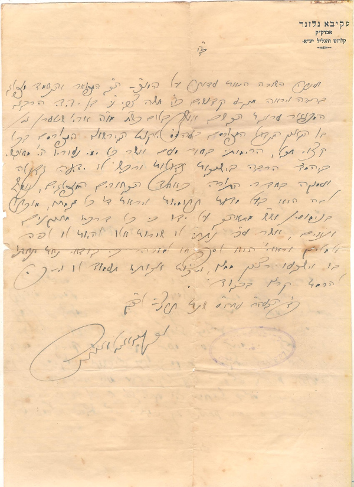

זה מכתב לנכדו של בעהמ"ס 'ילקוט המדרשים' הכוונה לרבי גרשון שטרן בעל הספרים הידועים "ילקוט הגרשוני" שזה ליקוט של הרבה מדרשים, ומובא כמעט בכל ספר של דרושים כמו"כ בבן גרני.

ב"ה
וענתה השורה הזאת עדות על המצ' הב' המפואר והתלמיד מופלג
כ"ד הבעה"ח ... שנת תרצ"ו לפק'
בתורה ויראה ... קדושים צ"י משה צבי נ"י בן ידידי הרבני
המפואר ערוגת הבשם אוצר בלום כש"ת מו"ה ארי' שטערן ני"ו
בן הגאון הגדול המפורסם בעהמ"ס ילקוט המדרשים המפורסם בכל
קצוי תבל, הרימותי בחור מעם אשר כל ימי נעוריו הי' מיושבי
ביהמ"ד הרבה בישיבות גדולות ורכש לו ידיעה גדולה
ועמוקה בחדרי התורה כאחד הבחורים המופלגים, נוסף
לזה הוא בעל מדות תרומיות ויראת ד' כל מגמתו, מוכתר
בנימוסין וש"ש (ושם שמים) מתאהב על ידו כי כל דרכיו מתנאים
ונאים, אשר ע"כ נתתי לו שורות אלו להיות לו לפה
ולמליץ וראוי הוא לספחו למורה כי בודאי נחת ינחתו
בו וישבעו רצון ממנו, וזכות אבותיו תעמוד לו לברכה
להרמת קרנו בכבוד
עקיבא גלזנר